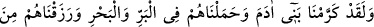
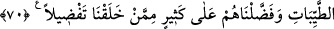

Onlar şerîatın hükümleri üzere giderler
Diğer bir işâret şudur: Nankörlük/küfrân ile Hak’tan yüz çevirmek hüsrâna sebep olur.
Cüneyd şöyle demiştir: “Bir sıddîk bin sene Allah’a yönelse, sonra bir an O’ndan yüz
çevirse, kaybettiği elde ettiğinden daha çoktur.” Kendi zamanındaki meşâyıhın yegânesi
Ebû Abdullah Şîrâzî şöyle demiştir: “Rasûlullah (s.a.)’i şöyle buyururken rüyada
gördüm: “Kim kendisini Allah’a götüren bir yolu tanır, ona sülûk eder sonra da ondan
dönerse Allah Teâlâ ona âlemlerden hiçbir kimseye etmediği bir azâb ile azâb eder.”
Bu yolda dâimâ sâbit-kadem ol
Yürü, eşkıyânın gamından elem çekme
Hakk’a teveccüh pazarından yüz çevirme
İstediğin bütün faydaları bu pazarda bil
Diğer bir işâret de şudur: Tüm yön ve cihetler Allah Teâlâ’nın güç, kudret ve
hâkimiyetine nisbetle eşittir. O’ndan yine ancak O’na sığınılır. Kulun Allah’tan korkusu,
nerede olursa olsun her yönden aynı olmalıdır. Allah Teâlâ her yerde cemâl ve celâliyle
tecellî etmektedir. Bu yüzden yakaza ve huzûr ehli, Allah’ın her yeri kuşattığını
müşâhede ettikleri için mekânlar ve haller arasında ayrım gözetmezler. Çünkü Allah
Teâlâ dilese, akla hatıra gelmeyecek bir yönden insanları helâk eder. Görmez misin ki O
Nemrud’u sinekle helâk etmişti. O’nun kudretine nisbetle sinek helâk etme işinde aslan
ve benzerleri gibidir. Belki de boğazına takılan bir lokma ile öleni bile görmüşsündür.
Bu lokma hayatın vesîlelerinden biriyken nasıl da ölümün sebeplerinden biri oldu, bir
bak. Allah yaşamasının vesîlesi olduğunu düşündüğü şeyle o kişinin canını almıştır. İyi
düşünürsen Allah’ın bu dünyadaki işlerinin ne kadar hayret verici olduğunu görürsün.
Hak kimi dilerse tasarrufu altına alır,
Kimsede pazu kuvveti yoktur ki O’nunla cenk ede
70. Biz, hakikaten insanoğlunu şan ve şeref sâhibi kıldık. Onları, (çeşitli nakil
vâsıtaları ile) karada ve denizde taşıdık; kendilerine güzel güzel rızıklar verdik;
yine onları, yarattıklarımızın birçoğundan cidden üstün kıldık.
“Biz, hakîkaten insanoğlunu şan ve şeref sâhibi kıldık.” Tekrîm ve ikrâm aynı
anlama gelir. Bunun isim hâli, kerâmettir. Ebüssuûd Efendi şöyle der: “İyisine ve
günahkârına şâmil olarak âdemoğullarının hepsini şan ve şeref sâhibi kıldık.”